A small working harvester that cuts home-grown cress with a scissor-action knife, driven by a tiny N20 gear motor. How real combines work, coloured diagrams, a shopping list, step-by-step build instructions, a safety plan — and seven ways to upgrade it.
Mum, this project grows real food and builds a real machine at the same time. The cress takes a week to grow on the windowsill. While it grows, I build a small harvester, about the size of a shoebox lid, that rolls along two wooden rails beside the tray. It snips the cress with a knife that works like a pair of scissors, and sweeps it into a little tank.
Four AA batteries — the same as a toy car, far too low to give a shock. The knife is plastic, not metal. It only runs while a button is held down, and a self-resetting fuse cuts the power if anything jams.
Foam board, lolly sticks, bottle caps, skewers and one £4 motor. It all fits in a shoebox. The mess is kitchen paper and a few seeds. No paint, no sawdust.
The cutter works exactly like the knife on a real combine harvester. Building it means measuring, working out gear ratios, wiring a circuit and fixing things when they don’t work first time.
Cress is one of the easiest things anyone can grow — and at the end there are egg & cress sandwiches for everyone. I grew them, harvested them and made them.
I do the planning, measuring, building, wiring and testing. A grown-up does the craft-knife cutting and the hot glue, and goes through the safety checklist with me before the first run. Everything is written down in this presentation and in the PDF report.
A combine harvester is called a combine because it combines several farm jobs into one machine. Driving across a wheat field, it does five things in a row:
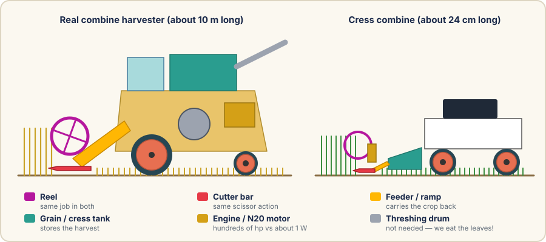
A big slowly turning paddle wheel at the front. It gently pushes the stalks back onto the knife so they fall the right way.
A long row of pointed guards with a knife sliding back and forth over them. Every stalk gets snipped like scissors, about 1,000 times a minute.
An auger and a conveyor carry the cut crop back and up into the machine.
A spinning drum knocks the grain out of the ears; sieves and a fan blow the chaff away. We skip this — cress leaves are the bit we want.
Clean grain collects in a tank on top, and a long pipe (the unloading auger) empties it into a trailer.
Reel, cutter bar, a ramp instead of the feeder, and a tank. Four of the five jobs, at about one-fortieth of the size.
| Real combine | Cress combine | |
|---|---|---|
| Length | About 10 m | About 24 cm |
| Cutting width | 6–12 m | 90 mm |
| Power | Hundreds of horsepower (a diesel engine) | About 1 watt (an N20 motor) |
| Knife cuts per minute | About 1,000 | About 600 |
| Price | Hundreds of thousands of pounds | About £20 |
| Harvest | Wheat, barley, oilseed rape | Cress (and maybe mustard) |
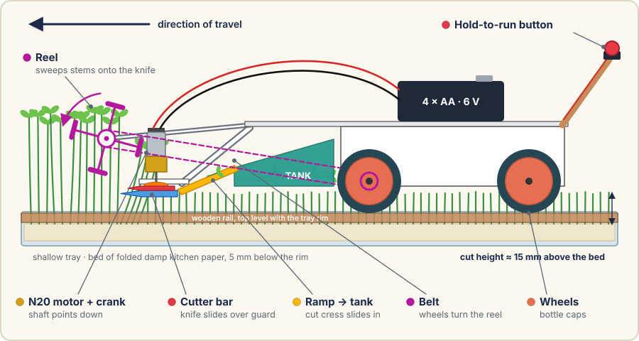
You push it along the rails holding the button; the wheels turn the reel through a rubber-band belt; the reel sweeps cress onto a knife that snips back and forth ten times a second; and the cut cress is pushed up a ramp into the tank.
Four card paddles on a skewer. Driven by the wheels, so it only turns when the machine moves.
A plastic guard comb (fixed) with a plastic knife (sliding) on top — ten teeth, 10 mm apart.
A tiny geared motor turns a crank; a lolly-stick arm turns the spinning into sliding.
A gentle card ramp behind the knife leads into a dustpan-shaped plastic tub.
4 × AA box on top; fuse, ON/OFF switch and a hold-to-run button on the handle.
Foam-board body, skewer axles in straw bearings, bottle-cap wheels on 10 mm wooden rails.
This is a design to build, not a kit that has been tested a hundred times. Every size here is a sensible starting point, and the troubleshooting page says what to change if something doesn’t work first time. That’s normal — it’s what engineers do.
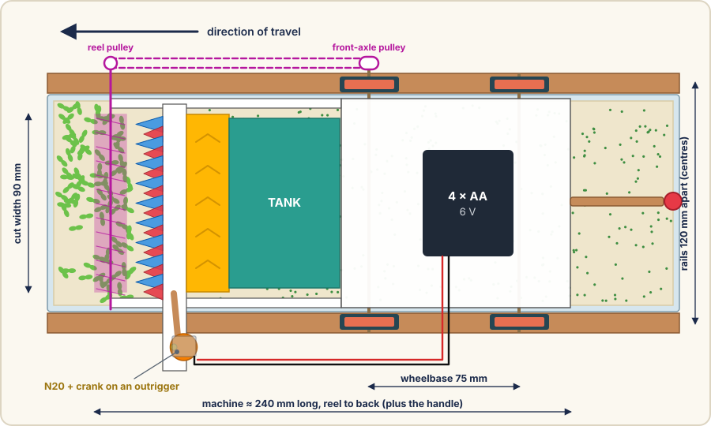
| Size | Value | Why this number |
|---|---|---|
| Cut width | 90 mm (100 mm guard) | Fits a 110 mm-wide tray between the rails |
| Rail spacing | 120 mm, centre to centre | 10 mm rails sit right against the tray walls |
| Tray | ≤ 110 mm wide, 20–30 mm deep | Shallow, so the cutter passes just above the rim |
| Cress bed | About 5 mm below the rim | Build it up with folded kitchen paper |
| Cut height | 15 mm above the bed | Leaves the roots and seed cases behind |
| Wheels | 30 mm bottle caps | Radius 15 mm — sets the reel speed ratio |
| Wheelbase | 75 mm | Long enough to run straight, short enough to be light |
| Tooth pitch / stroke | 10 mm / 10 mm | Each knife tooth sweeps exactly one gap |
If your tray is wider than 110 mm, move the rails out and make the cutter parts longer. Upgrade 5 shows how, and how to check the motor can cope.
An N20 gear motor is a tiny electric motor joined to a gearbox. The whole thing is about 12 mm across and 25 mm long — smaller than a sugar cube and a half — and weighs about 10 g. The gearbox trades speed for strength: the motor inside spins thousands of times a minute, but the output shaft turns slowly and strongly. We use the 6 V, 300 RPM version: five turns a second.
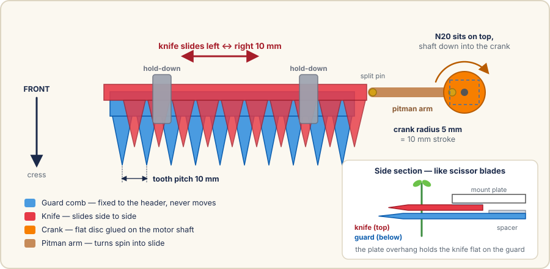
A pin on a spinning disc goes round in a circle. Join a stick to the pin and the other end moves back and forth — exactly how a steam locomotive’s connecting rods work, but backwards. On a combine this stick is called the pitman arm.
A spinning blade has to go very fast to cut soft stems — think of a strimmer — and a fast blade is dangerous. A scissor action cuts soft cress slowly and gently, using plastic teeth. It is the safer design, and it’s also what real combines use.
The pin is 5 mm from the centre, so the knife travels 10 mm each way — exactly the gap between two teeth. Every knife tooth sweeps across one whole gap on every half-turn, so no stem can hide between teeth.
Scissors don’t cut because they are sharp — they cut because two edges slide past each other while pressed together. Anything caught between them is pinched and sheared. That’s why the knife and guard must lie flat against each other; if there’s a gap, a soft stem just folds into it.
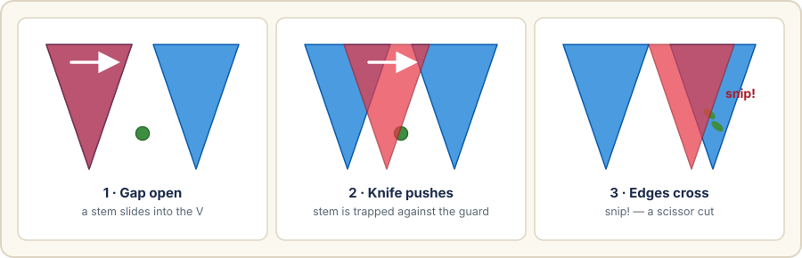
Pointed teeth guide stems into the gaps as the machine moves forward, so each one is cut close to where the edges meet — the strongest part of the cut.
The mount plate overhangs the knife and holds it flat on the guard. Tight enough not to lift; loose enough to slide with a light push.
Guard teeth are 15 mm long, knife teeth only 12 mm. The fixed guard always reaches further forward than the moving knife.
There are only three numbers to understand. The rest is just building carefully.
| Number | Sum | With our design |
|---|---|---|
| Cuts per second | 2 × (motor RPM ÷ 60) — one cut each way | 2 × (300 ÷ 60) = 10 cuts/s |
| Distance per cut | push speed ÷ cuts per second | 20 mm/s ÷ 10 = 2 mm |
| Reel speed ratio | reel radius ÷ wheel radius | 25 ÷ 15 ≈ 1.7 |
Between two cuts the machine should move forward less than half a tooth gap (5 mm). Then every stem is caught by a V before the next stem arrives, and nothing gets flattened.
| Distance per cut | What happens |
|---|---|
| ≤ 5 mm | Clean cut — every stem snipped |
| 5–10 mm | Mostly cut — a few stems bend over |
| > 10 mm | Pushing too fast — stems get flattened, not cut |
With a 300 RPM motor the knife makes 10 cuts a second, so any push speed up to 50 mm a second keeps within the golden rule. A comfortable 20 mm a second — a 20 cm tray in 10 seconds — gives lots of margin.
Choose which N20 to buy, how fast to push, and whether the knife is held flat. Watch the stems (in slow motion) and see if they get cut or flattened. Try a slow 50 RPM motor with a fast push — then fix it.
A slower motor gives fewer cuts a second, so you have to push more slowly. That’s why the self-driving upgrade uses a very slow drive motor. And no speed setting fixes a loose knife — the scissors must be snug.
Prices are rough UK prices for small quantities from hobby-electronics shops or online marketplaces. Lots of the list is probably already in the kitchen drawer.
| Part | What to look for | Qty | About |
|---|---|---|---|
| N20 gear motor | “N20 gear motor 6 V 300 RPM”, 3 mm D-shaft, ideally with wires already attached | 1 | £4 |
| Battery box | 4 × AA holder with built-in ON/OFF switch and leads | 1 | £2 |
| AA batteries | Rechargeable NiMH, or alkaline (don’t mix old and new) | 4 | £5 |
| Push button | Momentary, “normally open”, 12 mm panel type | 1 | £1 |
| Resettable fuse | PTC “polyfuse”, 500 mA hold current, radial leads | 1 | £1 |
| Capacitor | 100 nF ceramic disc, marked “104” | 1 | 20p |
| Connectors | Small lever connectors (no soldering needed) and hook-up wire | 6 | £3 |
| Foam board | A3 sheet, 5 mm thick | 1 | £3 |
| Stiff plastic | 1 mm sheet, e.g. an old ring-binder cover or polypropylene sheet | A4 | £1 |
| Wooden strips | 10 × 10 mm square dowel for the rails, 450 mm long | 2 | £2 |
| Lolly sticks | Jumbo craft sticks | 6 | £2 |
| Bamboo skewers | 3 mm, plus narrow straws they spin in freely | 4 | £1 |
| Split pins | Brass paper fasteners | 6 | £2 |
| Bottle caps | Four the same size, about 30 mm across | 4 | free |
| Rubber bands, cable ties, masking tape | Small band for the belt | — | free |
| Shallow tray & small tub | Tray ≤ 110 mm wide, 20–30 mm deep; tub about 90 × 50 mm | 1 + 1 | free |
| Cress seeds & kitchen paper | One packet does several harvests | 1 | £1.50 |
| Tool | Used for | Who |
|---|---|---|
| Craft knife, steel ruler, cutting mat | Cutting foam board | Grown-up |
| Low-temperature glue gun | Almost every joint | Grown-up, or me with a grown-up right there |
| Bradawl or thick needle | Holes in bottle caps and plastic | Grown-up |
| Strong scissors | Cutting the plastic guard and knife | Me |
| Pencil, fine pen, ruler, set square | Marking out | Me |
| Small screwdriver | Lever connectors, battery box | Me |
| Sandpaper (fine) | Smoothing the knife edges | Me |
| Soldering iron (optional) | Only if not using lever connectors | Grown-up |
Cress takes about a week, so plant it before building — it will be ready when the machine is.
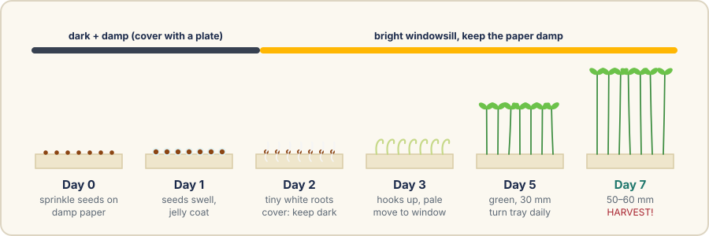
Cress leaning toward the window is phototropism: the stem grows faster on its shady side, which bends it toward the light. Turning the tray every day keeps it straight — which our knife will like.
Every part with its size. Mark out with a sharp pencil and a ruler — don’t trace a printout, because printers shrink pages.
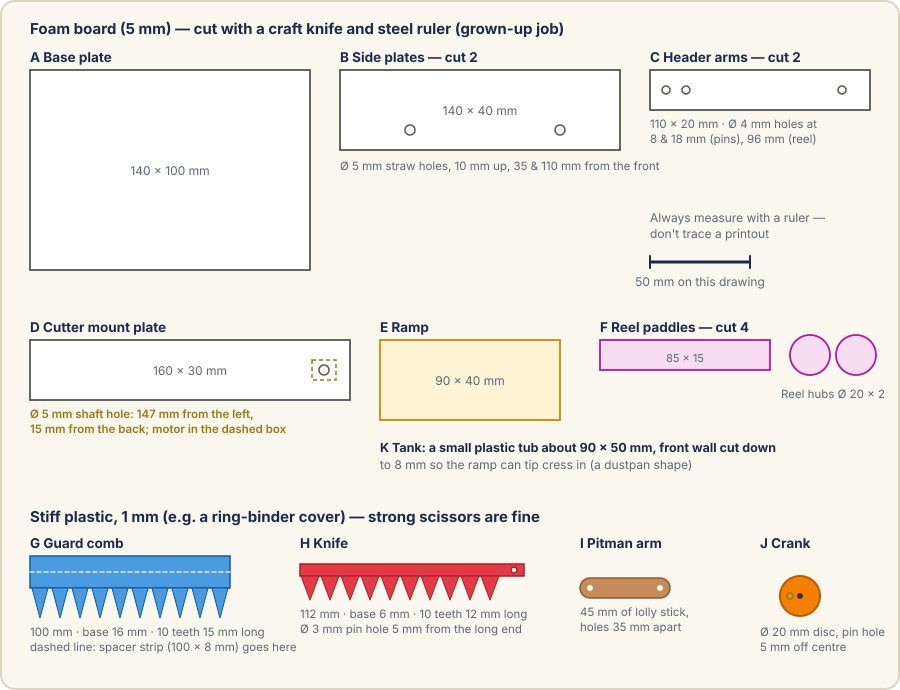
| Part | Material | Size | Notes |
|---|---|---|---|
| A Base plate | Foam board | 140 × 100 mm | Battery box sits on top |
| B Side plates × 2 | Foam board | 140 × 40 mm | Ø 5 mm straw holes 10 mm up, 35 & 110 mm from the front |
| C Header arms × 2 | Foam board | 110 × 20 mm | Ø 4 mm holes at 8 & 18 mm (pins) and 96 mm (reel axle) |
| D Cutter mount plate | Foam board | 160 × 30 mm | Ø 5 mm shaft hole 147 mm from the left, 15 mm from the back |
| E Ramp | Foam board or card | 90 × 40 mm | Glued at about 25° |
| F Reel paddles × 4, hubs × 2 | Stiff card | 85 × 15 mm; Ø 20 mm | Paddle tips reach 25 mm from the axle |
| G Guard comb + spacer | 1 mm plastic | 100 mm long | Base 16 mm, 10 teeth 15 mm long, 10 mm pitch; spacer strip 100 × 8 mm |
| H Knife | 1 mm plastic | 112 mm long | Base 6 mm, 10 teeth 12 mm long; Ø 3 mm pin hole at the long end |
| I Pitman arm | Lolly stick | 45 mm | Ø 3 mm holes 35 mm apart |
| J Crank | 3 layers of plastic | Ø 20 mm | Centre hole for the shaft, pin hole exactly 5 mm off centre |
| K Tank | Small plastic tub | ≈ 90 × 50 mm | Front wall cut down to 8 mm |
If the wheels keep slipping off the rails, glue a thin card disc slightly bigger than the cap to the inside of each wheel. That’s a flange — the same trick real trains use as a backup.
This is the most important part of the machine. Take your time: evenly spaced teeth and a flat, snug knife matter more than anything else.
If the knife lifts, glue two small hold-down strips of plastic under the front edge of the plate, one near each end, so they just touch the top of the knife.
Rub a candle over both plastic faces — wax is food-safe and slippery. Check no glue has squeezed into the slot.
A tiny gearbox can strip if you twist the shaft hard by hand. If something feels stiff, find what is rubbing rather than forcing it. The first powered test comes after the wiring.
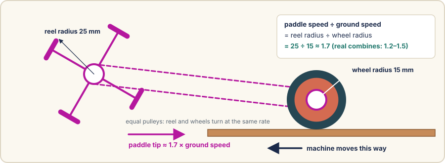
If the reel catches on something, the rubber band just slips. Nothing breaks, and the knife motor isn’t affected.
The whole circuit is one loop: power leaves the battery on the red wire, passes through three safety parts and the motor, and comes back on the black wire.
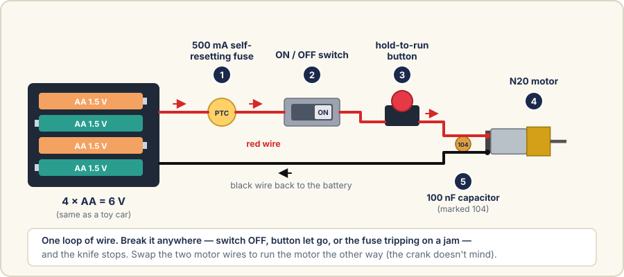
If the knife jams, the motor draws more current. The PTC fuse warms up and switches itself off. It resets after cooling for a minute.
The master switch. OFF whenever the machine isn’t on the rails.
Only runs while pressed. Let go and it stops — like a lawnmower’s safety bar.
Hard-boil 2 eggs (10 minutes), cool in cold water, peel and mash with a spoon of mayonnaise and a pinch of salt and pepper. Spread on buttered bread, scatter a big handful of freshly harvested cress on top, close, and cut into triangles. Farm to table in 15 minutes.
Something not working is part of the project. Change one thing at a time and test again.
| What you see | Why | What to do |
|---|---|---|
| Nothing happens | No power reaching the motor | Check batteries are in the right way, the switch is ON, the lever connectors are closed, and the fuse isn’t still warm |
| Motor hums, knife doesn’t move | Jammed or the sandwich is too tight | Batteries out, clear the jam, wax the knife, check the arm isn’t rubbing the plate |
| Stops, then works again a minute later | The fuse is doing its job on a jam | Find the stiff spot; push more slowly through thick patches |
| Stems bend over instead of cutting | Knife lifting, or pushing too fast | Add hold-down strips; push more slowly; check knife teeth really overlap the guard teeth |
| Ragged, torn cut | Rounded or whiskery tooth edges | Recut the knife with sharp scissors; sand edges crisp; try the 3D-printed cutter (Upgrade 6) |
| Crank arm jumps off | Crank pin too short, or no stop on its tip | Longer pin with a bead glued on the tip |
| Reel doesn’t turn | Belt slipping | Smaller rubber band; add another layer of tape to both pulleys |
| Reel throws cress forward | Reel turning the wrong way | Cross the belt into a figure of eight |
| Cress piles up at the bottom of the ramp | Ramp too steep or too far from the reel | Lower the ramp angle; move the reel back so paddles reach the ramp; or try the conveyor (Upgrade 7) |
| Knife scrapes the paper | Bed too high or lumpy | Flatten the bed; raise the header one row (Upgrade 1) |
| Machine wanders off the rails | Off-centre wheel, or axles not square | Re-centre wheels; add card flanges inside the wheels |
| Radio or TV crackles | Electrical noise from the motor brushes | Check the 100 nF capacitor is connected right at the motor |
Once the basic machine works, here is how to make it better. Each upgrade is on its own page with its own steps. Do them in any order, one at a time, and test after each.
| # | Upgrade | Difficulty | Extra cost | You learn about |
|---|---|---|---|---|
| 1 | Adjustable cutting height | Easy | Free | Measuring, fits, gauges |
| 2 | Speed dial | Medium | £3 | PWM electronics |
| 3 | Self-driving | Medium | £5 | Gear ratios, speed |
| 4 | Automatic end-of-row stop | Medium | £1 | Safety interlocks |
| 5 | Wider header | Medium | £1 | Load, torque, scaling |
| 6 | 3D-printed cutter bar | Advanced | Filament | CAD, tolerances |
| 7 | Conveyor-belt feeder | Advanced | Free | Belts, rollers, timing |
Batteries out before changing anything. After every upgrade, run through the first-spin test and the safety checklist again before cutting cress.
Different crops need different heights. Small cress wants a low cut; a lumpy bed needs a higher one. Real combines let the driver raise and lower the header from the cab; ours uses three rows of pin holes.
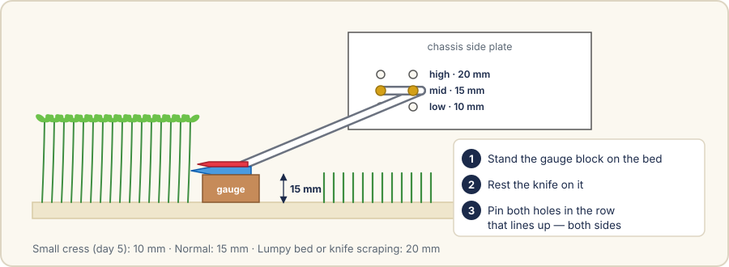
| Row | Cut height | Use when |
|---|---|---|
| Low | 10 mm | Young cress (day 5), shorter stems |
| Mid | 15 mm | Normal harvest |
| High | 20 mm | Lumpy bed, or the knife scrapes the paper |
A PWM speed controller is a little circuit board with a knob. It switches the power on and off hundreds of times a second. More “on” time means a faster motor. It lets you find the best knife speed by experiment, instead of buying different motors.
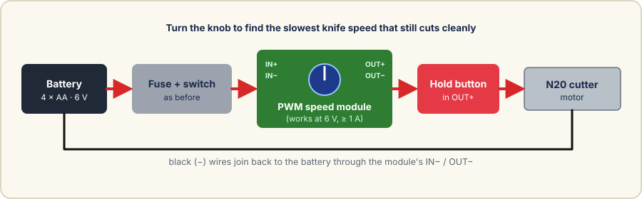
IN+; a new black wire from the battery’s black to IN−.OUT+ to the hold-to-run button, and the button to the motor red. Motor black goes to OUT− instead of straight to the battery.Turning the knob down lowers the knife’s power as well as its speed, so at very slow settings a thick patch can stall it, and the fuse will trip. Fewer cuts a second also means you must push more slowly. Use the simulator to see why.
Pushing at a perfectly steady speed is hard. A second, very slow N20 on the back axle drives the machine along at exactly the same speed every time. The automatic stop switch makes sure it can never drive off the end.
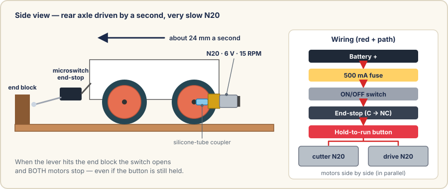
This is the same idea as the switch that stops a lift moving while its doors are open. The machine is safe even if someone forgets to let go of the button.
For a wider tray, everything across the machine gets longer by the same amount. Keep the tooth pitch at 10 mm and the stroke at 10 mm.
| Part | Standard | For a tray W mm wide |
|---|---|---|
| Rail spacing (centres) | 120 mm | W + 10 mm |
| Guard comb / number of teeth | 100 mm / 10 | W − 10 mm / (W − 10) ÷ 10 |
| Knife | 112 mm | guard + 12 mm |
| Plate D | 160 mm | guard + 60 mm |
| Base plate, axles, reel paddles | 100 / 150 / 85 mm | each + (W − 110) mm |
If there’s a 3D printer available (like the Ender-3 used for the PlaneForge aircraft), printed parts are straighter and more even than hand-cut plastic — and a better cut comes from perfectly spaced teeth.
Real combines don’t rely on a slope — they use a conveyor (the feeder house) to carry the crop up. Replacing the ramp with a small moving belt means cress never piles up at the bottom.
A loop of 20 mm ribbon or a cut-open rubber glove cuff, running over two skewer rollers: one just behind the knife, one above the tank’s low front wall. Matchstick cleats glued across it every 15 mm grab the cress.
A second small rubber band from the reel’s axle to the top roller. Like the reel, it only moves when the machine moves — so it needs no extra motor or wiring.
The conveyor has no motor of its own and stops when the machine stops, but rollers can still pinch. The batteries-out rule applies before clearing it.
For Mum: every risk we could think of, and what we do about each one.
| Risk | What we do about it |
|---|---|
| Craft-knife cuts | A grown-up does all knife cutting on a mat with a steel ruler; the blade is retracted and put away straight after. |
| Hot-glue burns | Low-temperature glue gun, used by or right next to a grown-up; kept on its stand; bowl of cold water nearby. |
| Fingers in the cutter | Plastic teeth, not metal; scissor action, not a spinning blade; hold-to-run button; guards stick out further than the knife; batteries out before hands go near the knife. |
| Electric shock | Not possible: 6 V from AA batteries is far too low to be felt. No mains electricity anywhere in the project. |
| Battery short circuit | Batteries live in a proper box; the fuse is the first thing after the battery; batteries out while wiring and when the machine is put away. |
| Motor jam or overheating | Self-resetting 500 mA fuse; let go of the button if it stalls; the belt slips instead of breaking. |
| Small parts | Split pins, beads and caps kept in a closed box, away from younger children and pets. |
| Food hygiene | Washed tray; clean hands; only candle wax as a lubricant; electrics above and behind the crop; cress rinsed before eating; any cress touched by glue thrown away. |
| Water and mess | Tray on a board with a tea towel underneath; misting bottle instead of a jug; electronics kept dry. |
This isn’t just a toy. Nearly every school science and maths topic turns up somewhere in it.
How seeds germinate, why seedlings grown in the dark are tall and pale, phototropism, and where food actually comes from.
Measuring to the millimetre, ratios (25 ÷ 15), speeds and rates (cuts per second), circumference (π × diameter), and working out a budget.
Turning rotation into sliding with a crank; gearboxes trading speed for force; how shearing works; electric circuits, fuses and switches; testing and fixing.
Following a plan, working safely, being patient for a week, fixing things that don’t work first time — and making lunch for the family.
| Word | What it means |
|---|---|
| N20 motor | A standard tiny electric motor (12 × 10 mm) sold with a gearbox attached |
| RPM | Revolutions per minute — how many whole turns the shaft makes each minute |
| Gearbox | Gears that make the output slower but stronger |
| D-shaft | A motor shaft with one flat side, so things fixed to it can’t slip round |
| Torque | Turning force — how hard the motor can twist |
| Stall | When the motor is stuck and can’t turn; it then draws the most current |
| Crank | A disc or arm with a pin off-centre, turning round and round |
| Pitman arm | The rod that turns the crank’s circling into the knife’s back-and-forth |
| Reciprocating | Moving back and forth in a straight line |
| Stroke | How far the knife travels each way (10 mm) |
| Pitch | The distance from one tooth to the next (10 mm) |
| Header | The whole front of a combine: reel, cutter bar and feeder |
| Shear | Cutting by sliding two edges past each other, like scissors |
| PTC fuse | A fuse that turns itself off when too much current flows, then resets when it cools |
| Capacitor | A tiny part that soaks up electrical crackle from the motor |
| PWM | Pulse-width modulation: switching power on and off very fast to control speed |
| NC / NO | Normally closed / normally open — whether a switch lets power through before you press it |
| In parallel | Two parts wired side by side so each gets the full battery voltage |
It’s safe, cheap, tidy and planned down to the last millimetre. I’ll learn about plants, maths, machines and circuits — and at the end of the week, you get an egg & cress sandwich made from a crop I grew and harvested with a machine I built. Everything is also in the PDF report, so you can read it properly first.